NICU
We takes pride in providing State of the Art Neonatal Care Unit facility and support.


We takes pride in providing State of the Art Neonatal Care Unit facility and support.
Complete consultation, accurate diagnosis and satisfy treatment of children from 0-18 years.
We offer a comprehensive range of vaccine solution for new born baby and children.
We Have Special Rooms with Kids Friendly Environment and all basic infrastructures.
We are one of the top as well as promising children diagnostic center in sanand.
State of the art PICU with all the latest and ultra modern equipment’s.
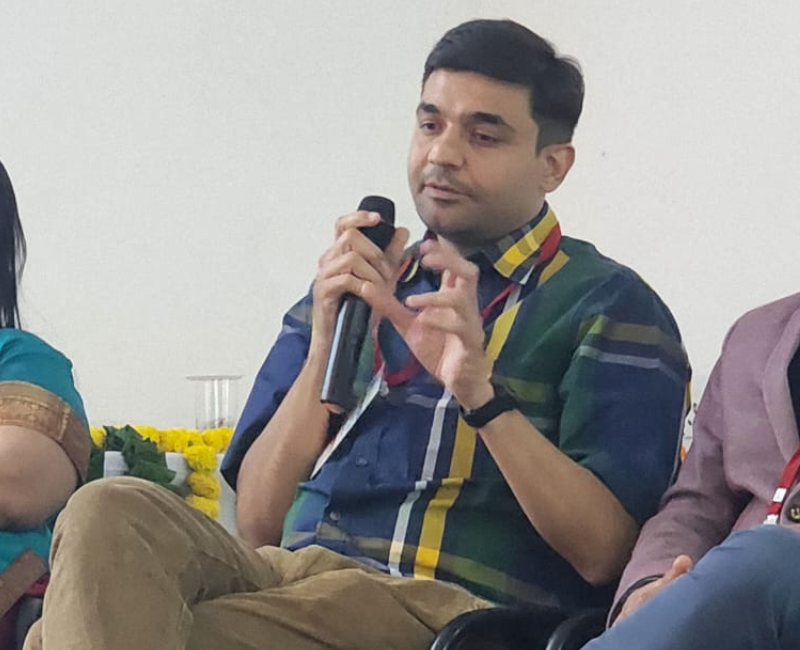
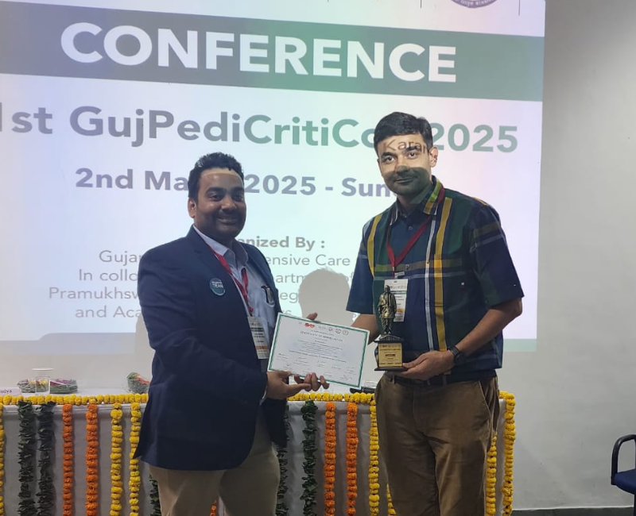
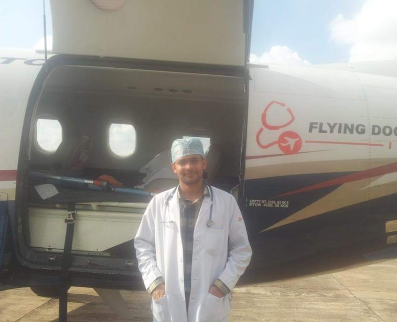
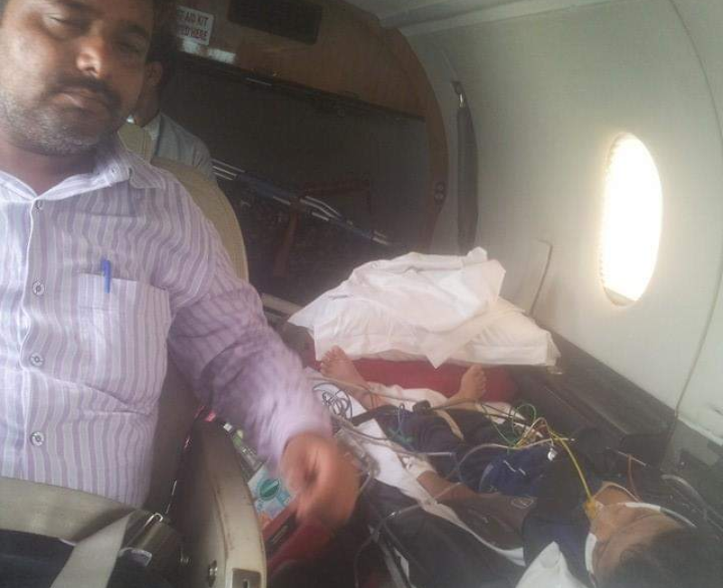
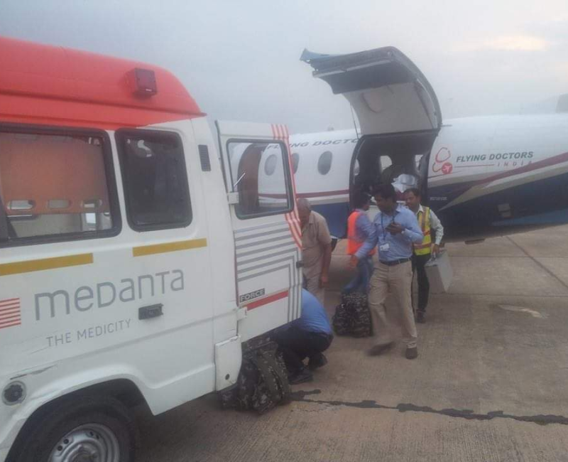
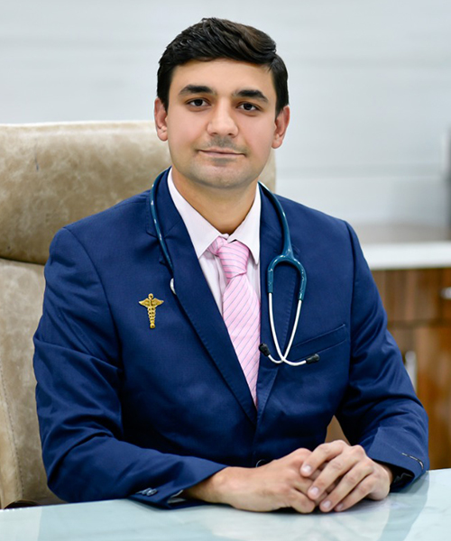
Dr. NAYAN PATEL
MBBS, M.D. PEDIATRIC (BJMC), IDPCCM
– MBBS
(B.J. Medical College – Ahmedabad)
– MD Pediatric
(B.J. Medical College – Ahmedabad)
– Fellowship Pediatric Cardiac Intensive Care
(Medanta Hospital – Gurgaon)
– Fellowship Pediatric Intensive Care
(Sir Gangaram Hosptal – Delhi)
Very good hospital and Dr Nayan is very knowledgeable & friendly behavior.
Staff is also very supportive.
Number one hospital in sanand.
Thank you very much Dr. nayan. Very supporting and giving perfect guidance for baby. Hospital have all facilities with proper staff and behavior. Stay blessed to you and your team.
The best part other than Nayan children hospital is you can get best treatment by Dr.Nayan Patel at anytime on Sunday or even late night
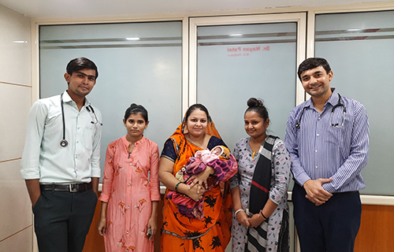
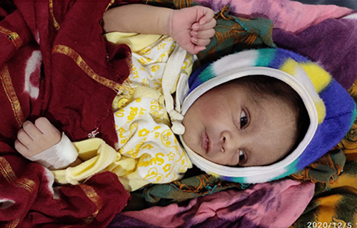
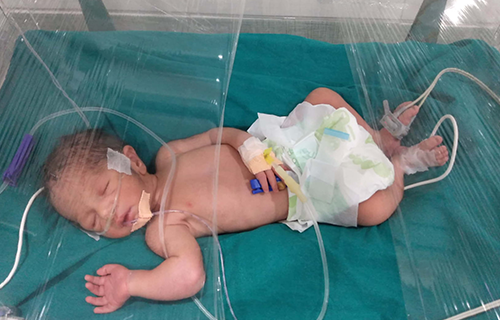
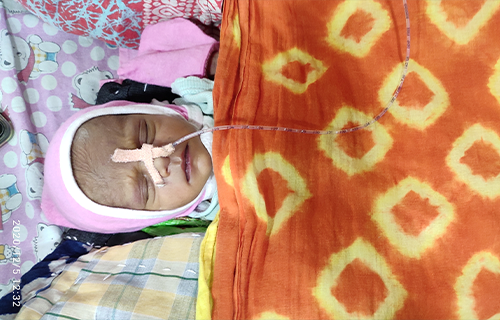
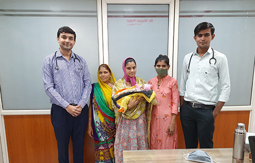
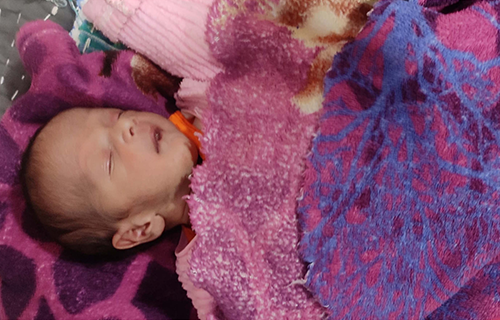
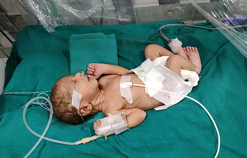
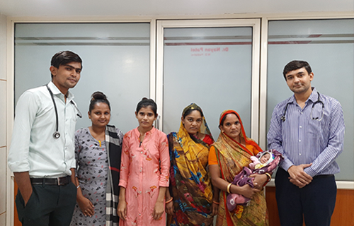